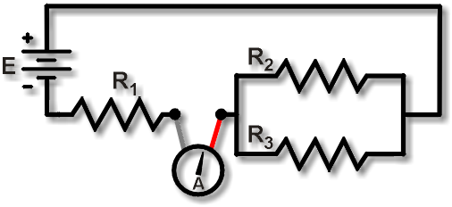
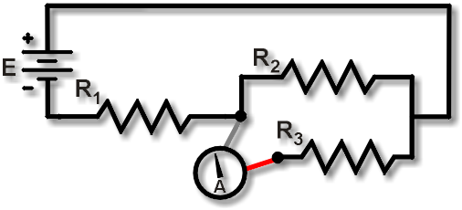

Measuring Current in Series-Parallel Circuits
|
 |
|
 |
Measuring current through resistances in series-parallel circuits requires current-measuring skills used in both series and parallel circuits.
Figure 1 shows a measurement of the current IR1. Notice that we lift the R1 lead and insert the meter to intercept all the current flowing into R1, just as with regular series circuits. Here all the current out of the parallel branches flows into R1.
In contrast, to measure the current IR3 in the lower parallel branch, look closely at Figure 2. Notice that the R1 lead is replaced, we lift the R3 lead, and insert the ammeter to intercept all the current out of R3, just as with regular parallel circuits. Similarly, to measure the current IR2, we would replace the R3 lead, lift only the R2 lead, and insert the DMM ammeter leads to intercept the current out of R2.
NOTE: When measuring the parallel branch currents, we must not lift the R1 lead. What if both the R1 and R3 leads are lifted and the DMM probes connected to them? In that case, the R2 current has no way out. R2 is effectively disconnected. The resulting circuit is simply a series connection of R1 and R3! Probably not what you were expecting!
Self-check: The total circuit current through the series resistor R1 must come out of the R2 and R3 parallel branches. So, this is a way you can verify your current measurements:
IR1 = IR2 + IR3
Caution: Lifting leads in series-parallel circuits can be tricky. You must be careful to avoid blowing the DMM fuse. If the DMM ammeter is accidentally inserted between two leads connected to full power, the result is—POW!—a blown DMM fuse!